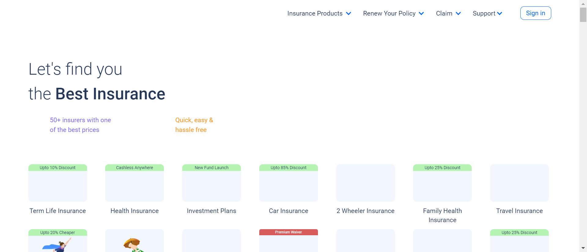

-
Car Insurance page
9:26:04 AM / 00:00:16:919 Fail
Car Insurance page
04.08.2024 9:26:04 AM 04.08.2024 9:26:21 AM 00:00:16:919 · #test-id=1FailCapturing Error Message By Invalid Login CredentialsGiven Navigate to Car insurance pageThen Proceed without providing car numberstepDefinitions.Hooks.addScreenshot(io.cucumber.java.Scenario)Capturing Error Message By Invalid Login CredentialsAnd Select city and RTOStep skippedAnd Select Car BrandStep skippedAnd Select Car ModelStep skippedAnd Select Car VariantStep skippedAnd Fill Details with Invalid Phone number and E-mailStep skippedThen Print the error message displayedStep skipped -
Car Insurance page
9:26:21 AM / 00:00:15:939 Fail
Car Insurance page
04.08.2024 9:26:21 AM 04.08.2024 9:26:37 AM 00:00:15:939 · #test-id=21FailCapturing Error Message By Invalid Login CredentialsFailCapturing Error Message By Invalid Login CredentialsGiven Navigate to Car insurance pageThen Proceed without providing car numberstepDefinitions.Hooks.addScreenshot(io.cucumber.java.Scenario)And Select city and RTOStep skippedAnd Select Car BrandStep skippedAnd Select Car ModelStep skippedAnd Select Car VariantStep skippedAnd Fill Details with Invalid Phone number and E-mail"1"Step skippedThen Print the error message displayedStep skippedFailCapturing Error Message By Invalid Login CredentialsstepDefinitions.Hooks.setup()Given Navigate to Car insurance pageStep skippedThen Proceed without providing car numberStep skippedAnd Select city and RTOStep skippedAnd Select Car BrandStep skippedAnd Select Car ModelStep skippedAnd Select Car VariantStep skippedAnd Fill Details with Invalid Phone number and E-mail"2"Step skippedThen Print the error message displayedStep skippedFailCapturing Error Message By Invalid Login CredentialsstepDefinitions.Hooks.setup()Given Navigate to Car insurance pageStep skippedThen Proceed without providing car numberStep skippedAnd Select city and RTOStep skippedAnd Select Car BrandStep skippedAnd Select Car ModelStep skippedAnd Select Car VariantStep skippedAnd Fill Details with Invalid Phone number and E-mail"3"Step skippedThen Print the error message displayedStep skipped -
Health Insurance page
9:26:37 AM / 00:00:04:268 Fail
Health Insurance page
04.08.2024 9:26:37 AM 04.08.2024 9:26:41 AM 00:00:04:268 · #test-id=80FailRetrieve all Health Insurance menu itemsGiven the user navigates to websiteWhen the user click on Insurance products menustepDefinitions.Hooks.addScreenshot(io.cucumber.java.Scenario)Then Retrieve all Health Insurance menu items as List and print themStep skipped -
Travel Insurance
9:26:41 AM / 00:00:04:538 Fail
Travel Insurance
04.08.2024 9:26:41 AM 04.08.2024 9:26:46 AM 00:00:04:538 · #test-id=90FailSelection of destination pageGiven Navigate to travel insurance pagestepDefinitions.Hooks.addScreenshot(io.cucumber.java.Scenario)When click on any european country as destination (country="Germany")Step skippedAnd click on next and navigate to Date pageStep skippedAnd select the Date and click on NextStep skippedAnd select the number of travellers and enter the age and click on nextStep skippedAnd verify your Medical History and click on next(condition="NO")Step skippedAnd Enter your Mobile NumberStep skippedAnd click on View plans and navigate to the plans pageStep skippedThen display three lowest international travel insurance planStep skipped -
Travel Insurance
9:26:46 AM / 00:00:03:649 Fail
Travel Insurance
04.08.2024 9:26:46 AM 04.08.2024 9:26:50 AM 00:00:03:649 · #test-id=112FailSelection of destination pageGiven Navigate to travel insurance pagestepDefinitions.Hooks.addScreenshot(io.cucumber.java.Scenario)When click on any european country as destination (country="Germany")Step skippedAnd click on next and navigate to Date pageStep skippedAnd select the Date and click on NextStep skippedAnd select the number of travellers and enter the age and click on nextStep skippedAnd verify your Medical History and click on next(condition="NO")Step skippedAnd Enter your Mobile NumberStep skippedAnd click on View plans and navigate to the plans pageStep skippedThen display three lowest international travel insurance planStep skipped
-
org.openqa.selenium.NoSuchWindowException
6 tests
org.openqa.selenium.NoSuchWindowException
6 failedStatus Timestamp TestName Fail 09:26:30 AM stepDefinitions.Hooks.addScreenshot(io.cucumber.java.Scenario) Car Insurance page.Capturing Error Message By Invalid Login Credentials.stepDefinitions.Hooks.addScreenshot(io.cucumber.java.Scenario)Fail 09:26:41 AM stepDefinitions.Hooks.addScreenshot(io.cucumber.java.Scenario) Health Insurance page.Retrieve all Health Insurance menu items.stepDefinitions.Hooks.addScreenshot(io.cucumber.java.Scenario)Fail 09:26:46 AM Given Navigate to travel insurance page Travel Insurance.Selection of destination page.Given Navigate to travel insurance pageFail 09:26:46 AM stepDefinitions.Hooks.addScreenshot(io.cucumber.java.Scenario) Travel Insurance.Selection of destination page.stepDefinitions.Hooks.addScreenshot(io.cucumber.java.Scenario)Fail 09:26:50 AM Given Navigate to travel insurance page Travel Insurance.Selection of destination page.Given Navigate to travel insurance pageFail 09:26:50 AM stepDefinitions.Hooks.addScreenshot(io.cucumber.java.Scenario) Travel Insurance.Selection of destination page.stepDefinitions.Hooks.addScreenshot(io.cucumber.java.Scenario) -
org.openqa.selenium.json.JsonException
1 tests
org.openqa.selenium.json.JsonException
1 failedStatus Timestamp TestName Fail 09:26:41 AM When the user click on Insurance products menu Health Insurance page.Retrieve all Health Insurance menu items.When the user click on Insurance products menu -
org.openqa.selenium.NoSuchElementException
1 tests
org.openqa.selenium.NoSuchElementException
1 failedStatus Timestamp TestName Fail 09:26:11 AM Then Proceed without providing car number Car Insurance page.Capturing Error Message By Invalid Login Credentials.Then Proceed without providing car number -
org.openqa.selenium.WebDriverException
3 tests
org.openqa.selenium.WebDriverException
3 failedStatus Timestamp TestName Fail 09:26:28 AM Then Proceed without providing car number Car Insurance page.Capturing Error Message By Invalid Login Credentials.Then Proceed without providing car numberFail 09:26:30 AM stepDefinitions.Hooks.setup() Car Insurance page.Capturing Error Message By Invalid Login Credentials.stepDefinitions.Hooks.setup()Fail 09:26:33 AM stepDefinitions.Hooks.setup() Car Insurance page.Capturing Error Message By Invalid Login Credentials.stepDefinitions.Hooks.setup()
-
@tag
2 tests
@tag
2 failedStatus Timestamp TestName Fail 09:26:41 AM Selection of destination page Travel Insurance.Selection of destination pageFail 09:26:46 AM Selection of destination page Travel Insurance.Selection of destination page
Started
Apr 8, 2024 09:26:04 AM
Ended
Apr 8, 2024 09:26:50 AM
Features Passed
0
Features Failed
5
Features
Scenarios
Steps
Timeline
Tags
| Name | Passed | Failed | Skipped | Others | Passed % |
|---|---|---|---|---|---|
| @tag | 0 | 2 | 0 | 0 | 0% |